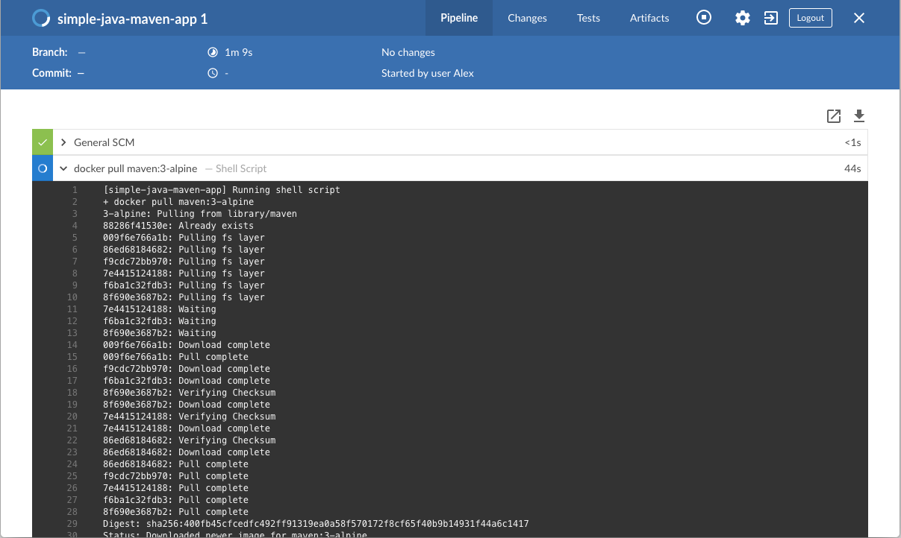
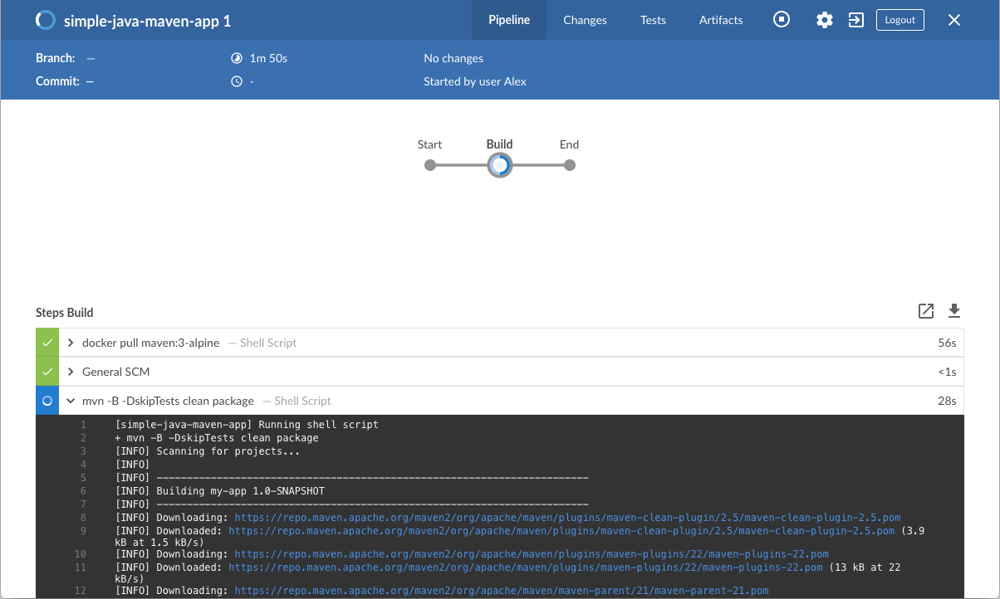
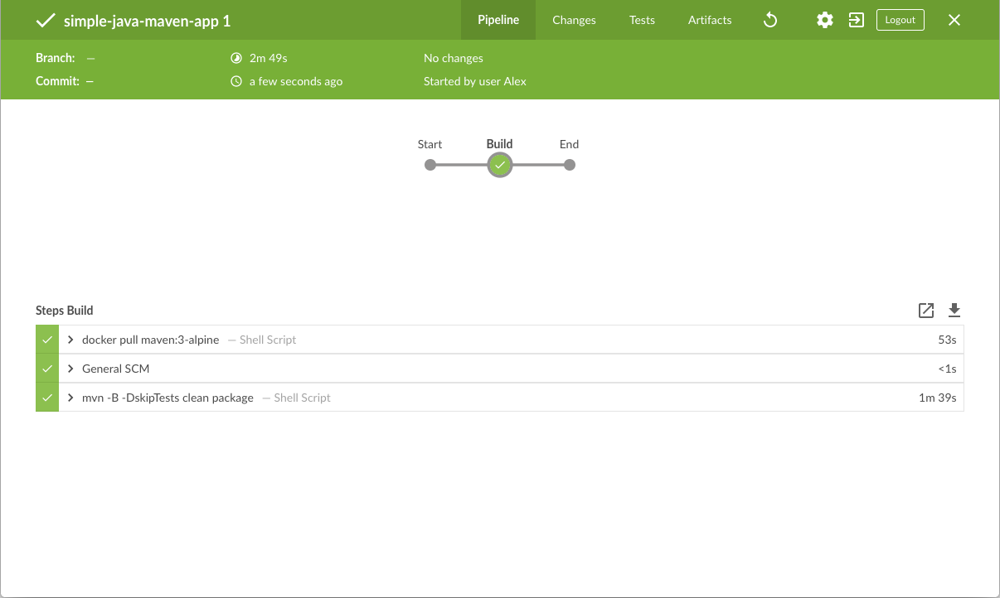
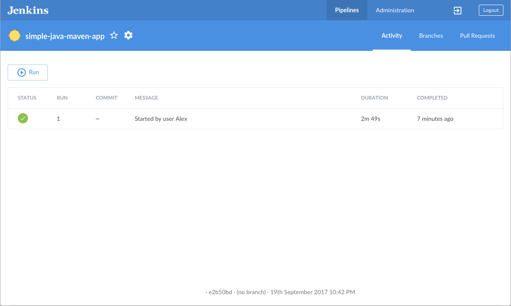
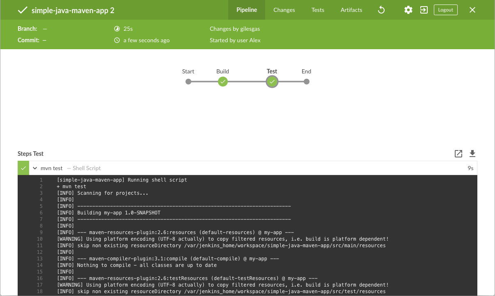
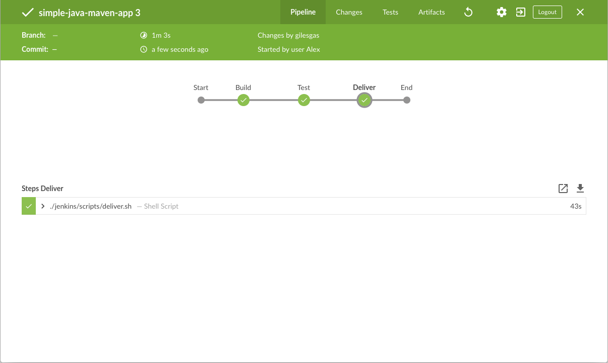
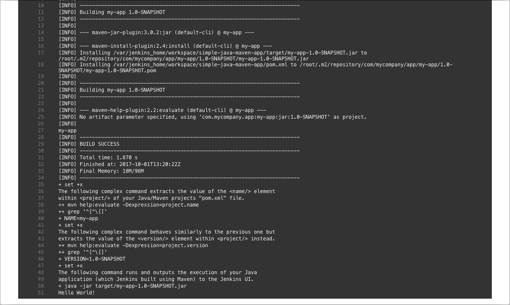
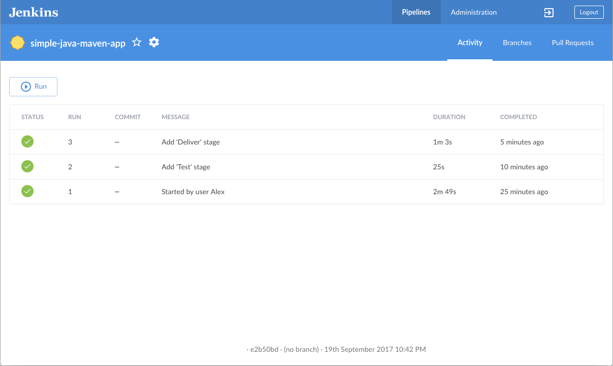

Build a Java app with Maven
|
This site is the new docs site currently being tested. For the actual docs in use please go to https://www.jenkins.io/doc. |
This tutorial shows you how to use Jenkins to build a simple Java application with Maven.
If you are a Java developer using Maven, but new to CI/CD concepts, or if you are familiar with these concepts, but don’t know how to implement building your application using Jenkins, then this tutorial is for you.
This example Java application from a GitHub repository outputs the string "Hello world!", and is accompanied by some unit tests, to check that the main application works as expected. The test results are saved to a JUnit XML report.
Duration: This tutorial takes 20-40 minutes to complete, assuming you meet the below prerequisites. The exact duration will depend on the speed of your machine and whether or not you’ve already run Jenkins in Docker from another tutorial.
You can stop this tutorial at any time and continue from where you left off.
If you’ve already run through another tutorial, you can skip the Prerequisites and run Jenkins in Docker sections below and proceed to forking the sample repository. Make sure you have Git installed locally. If you need to restart Jenkins, simply follow the restart instructions in Stopping and restarting Jenkins, and then proceed.
Prerequisites
For this tutorial, you will require:
-
A macOS, Linux or Windows machine with:
-
256 MB of RAM, although more than 2 GB is recommended.
-
10 GB of drive space for Jenkins and your Docker images and containers.
-
-
The following software installed:
-
Docker - Read more about installing Docker in the Installing Docker section of the Installing Jenkins page.
Note: If you use Linux, this tutorial assumes that you are not running Docker commands as the root user, but instead with a single user account that also has access to the other tools used throughout this tutorial. -
Git, and optionally GitHub Desktop.
-
Run Jenkins in Docker
In this tutorial, you’ll be running Jenkins as a Docker container from the
jenkins/jenkins Docker
image.
To run Jenkins in Docker, follow the relevant instructions below for either macOS and Linux or Windows.
You can read more about Docker container and image concepts in the Docker section of the Installing Jenkins page.
On macOS and Linux
-
Open up a terminal window.
-
Create a bridge network in Docker using the following
docker network createcommand:docker network create jenkins -
In order to execute Docker commands inside Jenkins nodes, download and run the
docker:dindDocker image using the followingdocker runcommand:docker run \ --name jenkins-docker \(1) --rm \(2) --detach \(3) --privileged \(4) --network jenkins \(5) --network-alias docker \(6) --env DOCKER_TLS_CERTDIR=/certs \(7) --volume jenkins-docker-certs:/certs/client \(8) --volume jenkins-data:/var/jenkins_home \(9) --publish 2376:2376 \(10) --publish 3000:3000 --publish 5000:5000 \(11) docker:dind \(12) --storage-driver overlay2 (13)1 ( Optional ) Specifies the Docker container name to use for running the image. By default, Docker will generate a unique name for the container. 2 ( Optional ) Automatically removes the Docker container (the instance of the Docker image) when it is shut down. 3 ( Optional ) Runs the Docker container in the background. This instance can be stopped later by running docker stop jenkins-docker.4 Running Docker in Docker currently requires privileged access to function properly. This requirement may be relaxed with newer Linux kernel versions. 5 This corresponds with the network created in the earlier step. 6 Makes the Docker in Docker container available as the hostname dockerwithin thejenkinsnetwork.7 Enables the use of TLS in the Docker server. Due to the use of a privileged container, this is recommended, though it requires the use of the shared volume described below. This environment variable controls the root directory where Docker TLS certificates are managed. 8 Maps the /certs/clientdirectory inside the container to a Docker volume namedjenkins-docker-certsas created above.9 Maps the /var/jenkins_homedirectory inside the container to the Docker volume namedjenkins-data. This will allow for other Docker containers controlled by this Docker container’s Docker daemon to mount data from Jenkins.10 ( Optional ) Exposes the Docker daemon port on the host machine. This is useful for executing dockercommands on the host machine to control this inner Docker daemon.11 Exposes ports 3000 and 5000 from the docker in docker container, used by some of the tutorials. 12 The docker:dindimage itself. This image can be downloaded before running by using the command:docker image pull docker:dind.13 The storage driver for the Docker volume. See "Docker storage drivers" for supported options. Note: If copying and pasting the command snippet above does not work, try copying and pasting this annotation-free version here:
docker run --name jenkins-docker --rm --detach \ --privileged --network jenkins --network-alias docker \ --env DOCKER_TLS_CERTDIR=/certs \ --volume jenkins-docker-certs:/certs/client \ --volume jenkins-data:/var/jenkins_home \ --publish 3000:3000 --publish 5000:5000 --publish 2376:2376 \ docker:dind --storage-driver overlay2 -
Customise official Jenkins Docker image, by executing below two steps:
-
Create Dockerfile with the following content:
FROM jenkins/jenkins:{jenkins-stable}-jdk17 USER root RUN apt-get update && apt-get install -y lsb-release RUN curl -fsSLo /usr/share/keyrings/docker-archive-keyring.asc \ https://download.docker.com/linux/debian/gpg RUN echo "deb [arch=$(dpkg --print-architecture) \ signed-by=/usr/share/keyrings/docker-archive-keyring.asc] \ https://download.docker.com/linux/debian \ $(lsb_release -cs) stable" > /etc/apt/sources.list.d/docker.list RUN apt-get update && apt-get install -y docker-ce-cli USER jenkins RUN jenkins-plugin-cli --plugins "blueocean:1.27.9 docker-workflow:572.v950f58993843" -
Build a new docker image from this Dockerfile and assign the image a meaningful name, e.g. "myjenkins-blueocean:{jenkins-stable}-1":
docker build -t myjenkins-blueocean:{jenkins-stable}-1 .Keep in mind that the process described above will automatically download the official Jenkins Docker image if this hasn’t been done before.
-
-
Run your own
myjenkins-blueocean:{jenkins-stable}-1image as a container in Docker using the followingdocker runcommand:docker run \ --name jenkins-blueocean \(1) --detach \(2) --network jenkins \(3) --env DOCKER_HOST=tcp://docker:2376 \(4) --env DOCKER_CERT_PATH=/certs/client \ --env DOCKER_TLS_VERIFY=1 \ --publish 8080:8080 \(5) --publish 50000:50000 \(6) --volume jenkins-data:/var/jenkins_home \(7) --volume jenkins-docker-certs:/certs/client:ro \(8) --volume "$HOME":/home \(9) --restart=on-failure \(10) --env JAVA_OPTS="-Dhudson.plugins.git.GitSCM.ALLOW_LOCAL_CHECKOUT=true" \(11) myjenkins-blueocean:{jenkins-stable}-1 (12)1 ( Optional ) Specifies the Docker container name for this instance of the Docker image. 2 ( Optional ) Runs the current container in the background (i.e. "detached" mode) and outputs the container ID. If you do not specify this option, then the running Docker log for this container is output in the terminal window. 3 Connects this container to the jenkinsnetwork defined in the earlier step. This makes the Docker daemon from the previous step available to this Jenkins container through the hostnamedocker.4 Specifies the environment variables used by docker,docker-compose, and other Docker tools to connect to the Docker daemon from the previous step.5 Maps (i.e. "publishes") port 8080 of the current container to port 8080 on the host machine. The first number represents the port on the host while the last represents the container’s port. Therefore, if you specified -p 49000:8080for this option, you would be accessing Jenkins on your host machine through port 49000.6 ( Optional ) Maps port 50000 of the current container to port 50000 on the host machine. This is only necessary if you have set up one or more inbound Jenkins agents on other machines, which in turn interact with your jenkins-blueoceancontainer (the Jenkins "controller"). Inbound Jenkins agents communicate with the Jenkins controller through TCP port 50000 by default. You can change this port number on your Jenkins controller through the Security page. If you were to change the TCP port for inbound Jenkins agents of your Jenkins controller to 51000 (for example), then you would need to re-run Jenkins (via thisdocker run …command) and specify this "publish" option with something like--publish 52000:51000, where the last value matches this changed value on the Jenkins controller and the first value is the port number on the machine hosting the Jenkins controller. Inbound Jenkins agents communicate with the Jenkins controller on that port (52000 in this example). Note that WebSocket agents do not need this configuration.7 Maps the /var/jenkins_homedirectory in the container to the Docker volume with the namejenkins-data. Instead of mapping the/var/jenkins_homedirectory to a Docker volume, you could also map this directory to one on your machine’s local file system. For example, specifying the option
--volume $HOME/jenkins:/var/jenkins_homewould map the container’s/var/jenkins_homedirectory to thejenkinssubdirectory within the$HOMEdirectory on your local machine, which would typically be/Users/<your-username>/jenkinsor/home/<your-username>/jenkins. Note that if you change the source volume or directory for this, the volume from thedocker:dindcontainer above needs to be updated to match this.8 Maps the /certs/clientdirectory to the previously createdjenkins-docker-certsvolume. This makes the client TLS certificates needed to connect to the Docker daemon available in the path specified by theDOCKER_CERT_PATHenvironment variable.9 Maps the $HOMEdirectory on the host (i.e. your local) machine (usually the/Users/<your-username>directory) to the/homedirectory in the container. Used to access local changes to the tutorial repository.10 Configure the Docker container restart policy to restart on failure as described in the blog post. 11 Allow local checkout for the tutorial. See SECURITY-2478 for the reasons why this argument should not be used on a production installation. 12 The name of the Docker image, which you built in the previous step. Note: If copying and pasting the command snippet above does not work, try copying and pasting this annotation-free version here:
docker run --name jenkins-blueocean --detach \ --network jenkins --env DOCKER_HOST=tcp://docker:2376 \ --env DOCKER_CERT_PATH=/certs/client --env DOCKER_TLS_VERIFY=1 \ --publish 8080:8080 --publish 50000:50000 \ --volume jenkins-data:/var/jenkins_home \ --volume jenkins-docker-certs:/certs/client:ro \ --volume "$HOME":/home \ --restart=on-failure \ --env JAVA_OPTS="-Dhudson.plugins.git.GitSCM.ALLOW_LOCAL_CHECKOUT=true" \ myjenkins-blueocean:{jenkins-stable}-1 -
Proceed to the Post-installation setup wizard.
On Windows
The Jenkins project provides a Linux container image, not a Windows container image.
Be sure that your Docker for Windows installation is configured to run Linux Containers rather than Windows Containers.
See the Docker documentation for instructions to switch to Linux containers.
Once configured to run Linux Containers, the steps are:
-
Open up a command prompt window and similar to the macOS and Linux instructions above do the following:
-
Create a bridge network in Docker
docker network create jenkins -
Run a docker:dind Docker image
docker run --name jenkins-docker --detach ^ --privileged --network jenkins --network-alias docker ^ --env DOCKER_TLS_CERTDIR=/certs ^ --volume jenkins-docker-certs:/certs/client ^ --volume jenkins-data:/var/jenkins_home ^ --publish 3000:3000 --publish 5000:5000 --publish 2376:2376 ^ docker:dind -
Customise official Jenkins Docker image, by executing below two steps:
-
Create Dockerfile with the following content:
FROM jenkins/jenkins:{jenkins-stable}-jdk17 USER root RUN apt-get update && apt-get install -y lsb-release RUN curl -fsSLo /usr/share/keyrings/docker-archive-keyring.asc \ https://download.docker.com/linux/debian/gpg RUN echo "deb [arch=$(dpkg --print-architecture) \ signed-by=/usr/share/keyrings/docker-archive-keyring.asc] \ https://download.docker.com/linux/debian \ $(lsb_release -cs) stable" > /etc/apt/sources.list.d/docker.list RUN apt-get update && apt-get install -y docker-ce-cli USER jenkins RUN jenkins-plugin-cli --plugins "blueocean:1.27.9 docker-workflow:572.v950f58993843" -
Build a new docker image from this Dockerfile and assign the image a meaningful name, e.g. "myjenkins-blueocean:{jenkins-stable}-1":
docker build -t myjenkins-blueocean:{jenkins-stable}-1 .Keep in mind that the process described above will automatically download the official Jenkins Docker image if this hasn’t been done before.
-
-
Run your own
myjenkins-blueocean:{jenkins-stable}-1image as a container in Docker using the followingdocker runcommand:docker run --name jenkins-blueocean --detach ^ --network jenkins --env DOCKER_HOST=tcp://docker:2376 ^ --env DOCKER_CERT_PATH=/certs/client --env DOCKER_TLS_VERIFY=1 ^ --volume jenkins-data:/var/jenkins_home ^ --volume jenkins-docker-certs:/certs/client:ro ^ --volume "%HOMEDRIVE%%HOMEPATH%":/home ^ --restart=on-failure ^ --env JAVA_OPTS="-Dhudson.plugins.git.GitSCM.ALLOW_LOCAL_CHECKOUT=true" ^ --publish 8080:8080 --publish 50000:50000 myjenkins-blueocean:{jenkins-stable}-1 -
Proceed to the Setup wizard.
Accessing the Docker container
If you have some experience with Docker and you wish or need to access your
Docker container through a terminal/command prompt using the
docker exec
command, you can add an option like --name jenkins-tutorial to the docker exec command.
That will access the Jenkins Docker container named "jenkins-tutorial".
This means you could access your docker container (through a separate
terminal/command prompt window) with a docker exec command like:
docker exec -it jenkins-blueocean bash
Accessing the Docker logs
There is a possibility you may need to access the Jenkins console log, for instance, when Unlocking Jenkins as part of the Post-installation setup wizard.
The Jenkins console log is easily accessible through the terminal/command
prompt window from which you executed the docker run … command.
In case if needed you can also access the Jenkins console log through the
Docker logs of
your container using the following command:
docker logs <docker-container-name>
Your <docker-container-name> can be obtained using the docker ps command.
Accessing the Jenkins home directory
There is a possibility you may need to access the Jenkins home directory, for
instance, to check the details of a Jenkins build in the workspace
subdirectory.
If you mapped the Jenkins home directory (/var/jenkins_home) to one on your
machine’s local file system (i.e. in the docker run … command
above), then you can access the
contents of this directory through your machine’s usual terminal/command prompt.
Otherwise, if you specified the --volume jenkins-data:/var/jenkins_home option in
the docker run … command, you can access the contents of the Jenkins home
directory through your container’s terminal/command prompt using the
docker container exec
command:
docker container exec -it <docker-container-name> bash
As mentioned above,
your <docker-container-name> can be obtained using the
docker container ls
command. If you specified the
--name jenkins-blueocean option in the docker container run …
command above (see also
Accessing the Jenkins/Blue
Ocean Docker container), you can simply use the docker container exec command:
docker container exec -it jenkins-blueocean bash
Setup wizard
Before you can access Jenkins, there are a few quick "one-off" steps you’ll need to perform.
Unlocking Jenkins
When you first access a new Jenkins instance, you are asked to unlock it using an automatically-generated password.
-
After the 2 sets of asterisks appear in the terminal/command prompt window, browse to
http://localhost:8080and wait until the Unlock Jenkins page appears.
-
Display the Jenkins console log with the command:
docker logs jenkins-blueocean -
From your terminal/command prompt window again, copy the automatically-generated alphanumeric password (between the 2 sets of asterisks).

-
On the Unlock Jenkins page, paste this password into the Administrator password field and click Continue.
Customizing Jenkins with plugins
After unlocking Jenkins, the Customize Jenkins page appears.
On this page, click Install suggested plugins.
The setup wizard shows the progression of Jenkins being configured and the suggested plugins being installed. This process may take a few minutes.
Creating the first administrator user
Finally, Jenkins asks you to create your first administrator user.
-
When the Create First Admin User page appears, specify your details in the respective fields and click Save and Finish.
-
When the Jenkins is ready page appears, click Start using Jenkins.
Notes:-
This page may indicate Jenkins is almost ready! instead and if so, click Restart.
-
If the page doesn’t automatically refresh after a minute, use your web browser to refresh the page manually.
-
-
If required, log in to Jenkins with the credentials of the user you just created and you’re ready to start using Jenkins!
Stopping and restarting Jenkins
Throughout the remainder of this tutorial, you can stop your Docker container by running:
docker stop jenkins-blueocean jenkins-dockerTo restart your Docker container:
-
Run the same
docker run …commands you ran for macOS, Linux or Windows above. -
Browse to
http://localhost:8080. -
Wait until the log in page appears and log in.
Fork and clone the sample repository
Get the "Hello world!" Java application from GitHub, by forking the sample repository of the application’s source code into your own GitHub account, and then cloning this fork locally.
-
Make sure you are signed in to your GitHub account. If you don’t yet have a GitHub account, sign up for free at GitHub.
-
Fork the
simple-java-maven-appon GitHub into your local GitHub account. If you need help, refer to the GitHub documentation on forking a repo for more information. -
Clone the forked
simple-java-maven-apprepository from GitHub to your machine. To begin this process, do either of the following, where<your-username>is the name of your user account on your operating system:-
If you have the GitHub Desktop app installed on your machine:
-
In GitHub, select Code in your forked repository, then select Open with GitHub Desktop.
-
In GitHub Desktop, before selecting Clone in Clone a Repository, ensure Local Path for your operating system, as follows:
-
macOS is
/Users/<your-username>/Documents/GitHub/simple-java-maven-app -
Linux is
/home/<your-username>/GitHub/simple-java-maven-app -
Windows is
C:\Users\<your-username>\Documents\GitHub\simple-java-maven-app
-
-
-
Alternatively:
-
Open a terminal/command line prompt and
cdto the appropriate directory, according to your operating system:-
macOS -
/Users/<your-username>/Documents/GitHub/ -
Linux -
/home/<your-username>/GitHub/ -
Windows -
C:\Users\<your-username>\Documents\GitHub\(Use a Git bash command line window, not the usual Microsoft command prompt)
-
-
Run the following command to clone your forked repo, replacing
YOUR-GITHUB-ACCOUNT-NAMEwith the name of your GitHub account:git clone https://github.com/YOUR-GITHUB-ACCOUNT-NAME/simple-java-maven-app
-
-
Create your Pipeline project in Jenkins
-
In Jenkins, sign in again if necessary, and select create new jobs under Welcome to Jenkins!. If your display is different, select New Item at the top left.
-
Enter your new Pipeline project name in Enter an item name.
-
Scroll down and select Pipeline, then select OK at the end of the page.
-
(Optional) Enter a Pipeline Description.
-
Select Pipeline on the left pane.
-
Select Definition, and then select the Pipeline script from SCM option. This option instructs Jenkins to obtain your Pipeline from source control management (SCM), which is your locally cloned Git repository.
-
Select Git from the options in SCM.
-
Enter the directory path of your locally cloned repository above in Script Path. This directory path from your user account/home directory on your host machine is mapped to the
/homedirectory of the Jenkins container, according to your operating system, below:-
For macOS -
/home/Documents/GitHub/simple-java-maven-app -
For Linux -
/home/GitHub/simple-java-maven-app -
For Windows -
/home/Documents/GitHub/simple-java-maven-app
-
-
Select Save to save your new Pipeline project. You’re now ready create a
Jenkinsfileto check into your locally cloned Git repository.
Create your initial Pipeline as a Jenkinsfile
You can now create a Pipeline that automates building your Java application with Maven in Jenkins.
Your Pipeline is created as a Jenkinsfile, which is committed to your locally cloned Git repository (simple-java-maven-app).
This is the foundation of "Pipeline-as-Code", which treats the continuous delivery pipeline as a part of the application, to be versioned and reviewed like any other code. Read more about Pipeline and what a Jenkinsfile is in the Pipeline and Using a Jenkinsfile sections of the User Handbook.
First, create an initial Pipeline to download a Maven Docker image and run it as a Docker container, which builds your Java application. Be sure to add a "Build" stage to the Pipeline that begins orchestrating this whole process.
-
Using your favorite text editor or IDE, create and save a new text file with the name
Jenkinsfileat the root of your localsimple-java-maven-appGit repository. -
Copy the following Declarative Pipeline code and paste it into your empty
Jenkinsfile:pipeline { agent { docker { image 'maven:3.9.6-eclipse-temurin-17-alpine' (1) args '-v /root/.m2:/root/.m2' (2) } } stages { stage('Build') { (3) steps { sh 'mvn -B -DskipTests clean package' (4) } } } }1 This imageparameter of theagentsection’sdockerparameter downloads themaven:3.9.6-eclipse-temurin-17-alpineDocker image, if not already available on your machine, and runs this image as a separate container. This means that:-
You’ll have separate Jenkins and Maven containers running locally in Docker.
-
The Maven container becomes the agent that Jenkins uses to run your Pipeline project. However, this container is short-lived: for the duration of your Pipeline’s execution.
2 This argsparameter creates a reciprocal mapping between the/root/.m2directories in the short-lived Maven Docker container and that of your Docker host’s filesystem. A fuller explanation is beyond the scope of this tutorial. You do this mainly to ensure that the artifacts for building your Java application, which Maven downloads while your Pipeline is being executed, are retained in the Maven repository after the Maven container is gone. This prevents Maven from downloading the same artifacts during successive Pipeline runs. NOTE: Unlike the Docker data volume created forjenkins-dataabove, the Docker host’s filesystem is effectively cleared out each time Docker is restarted, so you lose the downloaded Maven repository artifacts each time Docker restarts.3 Defines a stage(directive) calledBuildthat appears on the Jenkins UI.4 This shstep runs the Maven command to cleanly build your Java application without running any tests. -
-
Save your edited
Jenkinsfileand commit it to your localsimple-java-maven-appGit repository. Within thesimple-java-maven-appdirectory, run the commands:-
git add . -
git commit -m "Add initial Jenkinsfile"
-
-
In Jenkins, sign in if necessary, and select Open Blue Ocean on the left pane.
-
Select Run from the This job has not been run options, then quickly select OPEN on the lower-right. If you cannot select OPEN in time, you can alternatively select the top row on the main Blue Ocean interface to display Jenkins running your project. You may need to wait several minutes for this first run to complete. After making a clone of your local
simple-java-maven-appGit repository itself, Jenkins:-
Initially queues the project to be run on the agent.
-
Downloads the Maven Docker image and runs it in a container on Docker.

-
Runs the
Buildstage defined in theJenkinsfileon the Maven container. During this time, Maven downloads many artifacts necessary to build your Java application, which are ultimately stored in Jenkins' local Maven repository in the Docker host’s filesystem.
The Blue Ocean interface displays green if Jenkins built your Java application successfully.

-
-
Select the X at the top-right to return to the main Blue Ocean interface.

Add a test stage to your Pipeline
-
Go back to your text editor/IDE and ensure your
Jenkinsfileis open. -
Copy and paste the following Declarative Pipeline syntax immediately under the
Buildstage of yourJenkinsfile:stage('Test') { steps { sh 'mvn test' } post { always { junit 'target/surefire-reports/*.xml' } } }so that you end up with:
pipeline { agent { docker { image 'maven:3.9.6-eclipse-temurin-17-alpine' args '-v /root/.m2:/root/.m2' } } stages { stage('Build') { steps { sh 'mvn -B -DskipTests clean package' } } stage('Test') { (1) steps { sh 'mvn test' (2) } post { always { junit 'target/surefire-reports/*.xml' (3) } } } } }1 Defines a stage(directive) calledTestthat appears on the Jenkins UI.2 This shstep executes the Maven command to run the unit test on your Java application. This command also generates a JUnit XML report, which is saved to thetarget/surefire-reportsdirectory within the/var/jenkins_home/workspace/simple-java-maven-appdirectory in the Jenkins container.3 This junitstep (provided by the JUnit Plugin), archives the JUnit XML report generated by themvn testcommand above, and displays the results through the Jenkins interface. In Blue Ocean, select Tests to access the Pipeline run test results. Thepostsection’salwayscondition that contains thisjunitstep ensures that the step is always executed at the completion of theTeststage, regardless of the stage’s outcome. -
Save your edited
Jenkinsfileand commit it to your localsimple-java-maven-appGit repository. Within thesimple-java-maven-appdirectory, run the commands:-
git stage . -
git commit -m "Add 'Test' stage"
-
-
In Jenkins, sign in if necessary, and access the Blue Ocean interface.
-
Select Run at the top left, then quickly select OPEN, which appears briefly at the lower-right, to display Jenkins running your updated Pipeline project. Alternatively, you can select the top row on the Blue Ocean interface to display Jenkins running your updated Pipeline project.
Note that Jenkins no longer needs to download the Maven Docker image. Instead, Jenkins runs a new container from the Maven image downloaded previously. If Docker has not restarted since you last ran the Pipeline above, then no Maven artifacts are downloaded during the "Build" stage. Therefore, running your Pipeline this subsequent time should be much faster.
The Blue Ocean interface displays as below if a Pipeline runs successfully. Notice the additional "Test" stage. You can select the previous "Build" stage circle to access the output from that stage.
 . Select the X at the top-right to return to the main Blue Ocean interface.
Add a final deliver stage to your Pipeline
-
Go back to your text editor/IDE and ensure your
Jenkinsfileis open. -
Copy and paste the following Declarative Pipeline syntax immediately under the
Teststage of yourJenkinsfile:stage('Deliver') { steps { sh './jenkins/scripts/deliver.sh' } }Add a
skipStagesAfterUnstableoption, resulting in:pipeline { agent { docker { image 'maven:3.9.6-eclipse-temurin-17-alpine' args '-v /root/.m2:/root/.m2' } } options { skipStagesAfterUnstable() } stages { stage('Build') { steps { sh 'mvn -B -DskipTests clean package' } } stage('Test') { steps { sh 'mvn test' } post { always { junit 'target/surefire-reports/*.xml' } } } stage('Deliver') { (1) steps { sh './jenkins/scripts/deliver.sh' (2) } } } }1 Defines a new stage called Deliverthat appears on the Jenkins UI.2 This shstep runs the shell scriptdeliver.shlocated in thejenkins/scriptsdirectory from the root of thesimple-java-maven-apprepository. Refer to thedeliver.shscript file to learn more. It is generally good practice to keep your Pipeline code, such as yourJenkinsfile, streamlined, and place more complex build steps, particularly stages consisting of 2 or more steps, into separate shell script files (like thedeliver.shfile). Maintaining your Pipeline code is easier this way. -
Save your updated
Jenkinsfileand commit it to your localsimple-java-maven-appGit repository.-
git stage . -
git commit -m "Add 'Deliver' stage"
-
-
In Jenkins, sign in if necessary, and access Jenkins' Blue Ocean interface.
-
Select Run at the top left, then quickly select OPEN, which appears briefly at the lower-right, to display Jenkins running your updated Pipeline project. Alternatively, you can select the top row on the Blue Ocean interface to display Jenkins running your updated Pipeline project. The Blue Ocean interface displays as below if a Pipeline runs successfully. Notice the additional "Deliver" stage. Select the previous "Test" and "Build" stage circles to access the outputs from those stages.

The "Deliver" stage output should be something like below, showing you the execution results of your Java application at the end.

-
Select the X at the top-right to return to the main Blue Ocean interface, which lists your previous Pipeline runs in reverse chronological order. 
Wrapping up
Well done! You’ve just used Jenkins to build a simple Java application with Maven!
The "Build", "Test" and "Deliver" stages you created above are the basis for building more complex Java applications with Maven in Jenkins, as well as Java and Maven applications that integrate with other technology stacks.
Because Jenkins is extremely extensible, it can be modified and configured to handle practically any aspect of build orchestration and automation.
To learn more about what Jenkins can do, check out:
-
The Tutorials overview page for other introductory tutorials.
-
The User Handbook for more detailed information about using Jenkins, such as Pipelines (in particular Pipeline syntax) and the Blue Ocean interface.
-
The Jenkins blog for the latest events, other tutorials and updates.